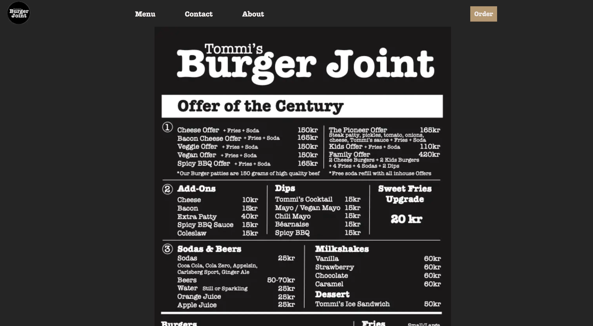
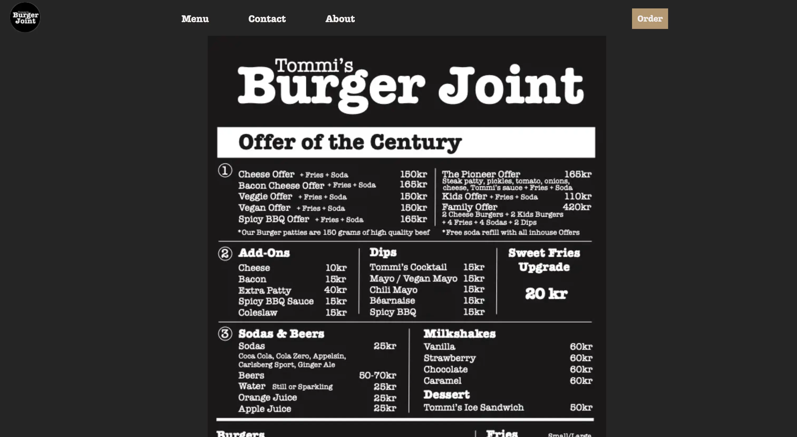

TEMA 5
GRUNDLÆGGENDE INDHOLD
I tema 5 lærte vi om inholdsproduktion. I temaet skulle vi planlægge, optage og redigere video og fotos. Vi lærte om hvordan man laver præproduktion, produktion og postproduction af inhold. Vi lærte hvordan man bruger ekstern lyd fra mikrofone og klipper et video i Premiere Pro. Vi lærte om Lottiefiles og hvordan man laver Lottiefile.
05.01.01 PASSIONSITE
I den første temaopgave skulle vi i teams af to personer lave et 60 sek video og fotos. Vi skulle finde en person med passion og interviewe dem om deres passion. Så skulle vi redigere videon individuelt i Premiere Pro og lave en simpelt website med videon og en Lottiefile.
Video
I denne opgave var jeg i gruppe sammen med Melkorka. Vi interviewede Melkorkas kusine , Anika Embla. Men Anika Embla arbejder hos Rezet sneaker store og har passion for mode. Vi interviewede hende om hendes passion og filmede hende i Rezet sneaker store hvor hun arbejder.
Link til vores videoKoded website og Lottiefile
Efter at vi havde lavet vores video skulle vi lave en simpelt website med nogle fotos, videon og en lottiefile. Vi skulle bruge Adobe Efter Affects for at lave en Lottiefile.
Konklusion
Det var sjovt at bruge Premiere Pro og Adobe Efter Affects in denne opgave. Jeg er tilfreds med vores video men vi var men var godt forberedt før vi filmede vores video.
Link til min løsning05.02.01 VIRKSOMHEDSSITE
I denne opgave lavede vi redesign af et virksomheds website i en gruppe af 3. Vi skulle både kode et website og lave et video.
I denne opgave var jeg i gruppe med Elias og Melkorka. Vi besluttede os at lave et redesign af Tommi’s burger Joint webside. Men jeg arbejder som office assistant hos Tommi’s Burger Joint så det var nemt at få tilladelse fra virksomheden. Og deres webside er ret simpel og havde også brug for redesign fordi den var ikke brugervenlig.
Den gamle hjemmeside
Som I kan se fra denne skærmebilleder fra den gamle webside så er Tommis Burger Joint gamle webside ikke brugervenlig. Den virker også ikke for mobil. Det var også svært at finde hvor man bestiller mad på websiden og farven på bogstaverne på kontakt formen er for mørkt.


Research og tests
Interview: Jeg interviewede min chef hos Tommis Burger Joint om bl.a. hvad hun synes at deres målgruppe er og om hendes forvetninger om den nye webside. Hun sagde at det vil gerne vise at restauranten har afslappet atmosfære, hjemlig og “raw look”. Og at deres målgruppe er unge mennesker 18-35 år og familier. Og at historien bag Tommi's burger joint er vigtig. Men Tommi, ejeren åbnede den første fast food restaurant på Island. Tommis burger joint åbnede i Kødbyen i 2014.

Trello og samarbejde
Vi brugte Trello til at organisere vores projekt. Jeg synes at det var meget fornyttigt at bruge Trello for vores samarbejde.

Design og prototypes
Vi fik inspiration for vores nye design fra andre burger restauranter og også Tommis burger joint international webside. Vi valgte at bruge mørke farver . Men vores værdiord for vores style var minimalistik, rocky, mainstream.


Video præproduktion og postproduktion
Jeg lavede vores moodboard og shotlist for vores video. Men efter at jeg havde interviewed min chef syntes vi at vi skulle vise Tommis burger Joint stemning i videon. Vi ville gerne vise deres afslappede og venlige atmosfære i videon. Jeg valgte at bruge mørkere farver i color correctionen og at videon skulle være klippet i en fast pace. Og så valgte jeg et rock sang fra Epidemic Sound fordi restauranten har rocky vibes.


Video
Vores logline for videoen er: Et indblik i driften af Tommi ́s burgerjoint på en normal dag. Vores hensigt med at bruge video på sitet var at formidle den stemning som Tommis burger Joint har og hvad kunden kan forvente når han eller hun besøger restauranten.
Link til vores videoKodet site
 


Præsentation
Vi lavede en Pecha Kucha præsentation hvor vi havde kun 20 sekunder til at presentere hver slide. Vores præsentation gik fint. Feedbacken som vi fik var at lave flere test på websiden f.eks. Bert test og 5 sek test.
Konklusion
Jeg syntes det var meget interresant at lave videoer og redesign på virksomhedssitet. Jeg lærte mange nye ting på Tema 5. Jeg lærte mange ting om samarbejde og hvor vigtigt det er at være organiseret når man arbejder i gruppe.